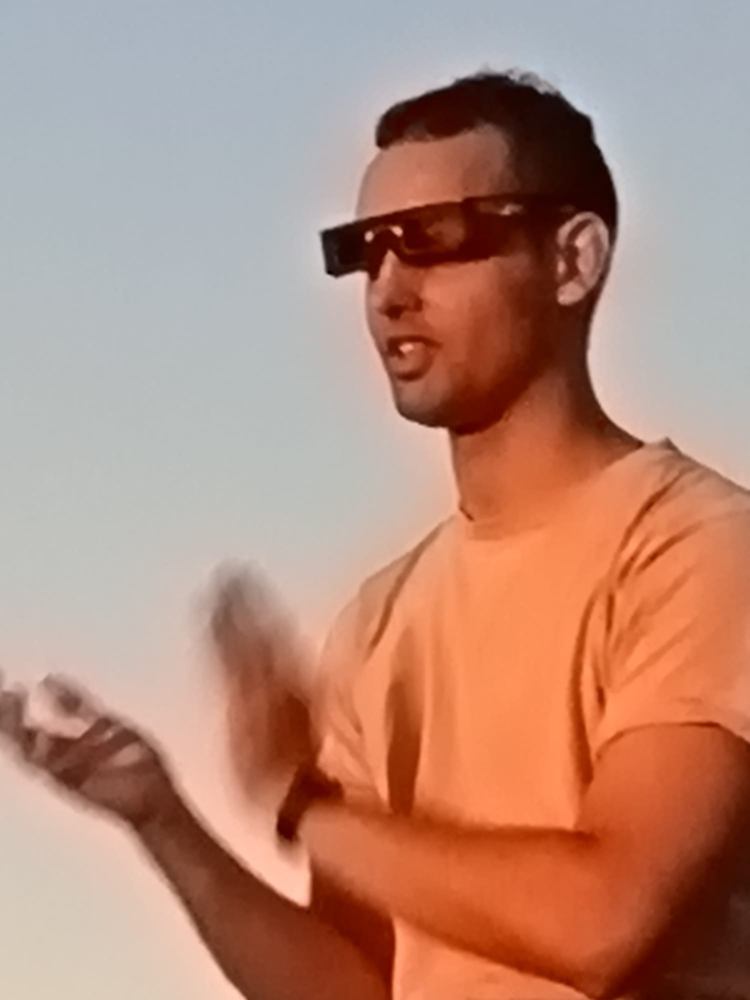

I am a research assistant at the Data to Actionable Knowledge Lab at the Harvard John A. Paulson School of Engineering, under the supervision of Professor Finale Doshi-Velez. My current work focuses on reduced models and missing data in healthcare. Specifically, I am exploring how to avoid using data imputation by leveraging reduced models in a computationally tractable way.
Before coming to Harvard, I worked at the Computational Intelligence Group under the supervision of Professors Pedro Larrañaga and Concha Bielza. There, I focused on applying causal inference to scientific discovery, tackling causal questions in complex domains subject to different types of shifts in the data. My overarching goal with this work is to help build robust, reliable causal systems that provide practical value to the scientific community, especially in biology and healthcare.
Beyond my previous research, I maintain a strong interest in AI safety. As frontier models advance, I am eager to explore principled approaches to multi-agent reinforcement learning (MARL), particularly finding ways to prevent reward-hacking and ensure that complex AI systems remain aligned with human values.
Personal interests
Outside the lab, my reading habits are a bit all over the place. I just really enjoy a good story, whether that is the first part of Don Quixote or Asimov’s Foundation trilogy (I will gladly argue that the second book is the best one). My bedside table is pretty diverse: I read the Bible, and I also have a copy of the I Ching (Book of Changes). My specific copy has an interesting backstory—it was translated by a German Jesuit and then into Spanish—and yes, I actually toss the old Chinese coins to ask it questions whenever I can't make up my mind.
To balance out all that sitting down, I spend a lot of time weightlifting. I also managed to run a half marathon once, which served as a great reminder of why I usually prefer the gym.
A few moments from my work